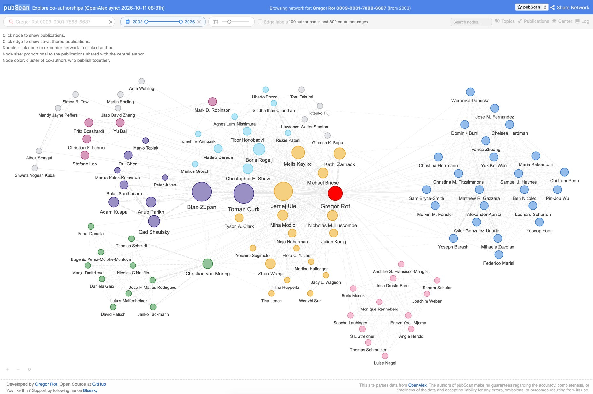

| This site parses data from OpenAlex. The authors of pubScan make no guarantees regarding the accuracy, completeness, or timeliness of the data and accept no liability for any errors, omissions, or outcomes resulting from its use. |
pubScan draws the publication network of any researcher: who they publish with, how strongly, and which groups of co-authors work together. It covers 132 million publications of 10.3 million authors.
A co-authorship network is a map of scientific collaboration. Every node is a researcher, and an edge connects two researchers who have written at least one publication together. Looking at the network of one scientist shows at a glance who their closest collaborators are, which research groups they belong to, and how those groups are connected.

The researcher you searched for sits in the middle, drawn in red . Double-click any other node to make that person the center.
The area of a node shows how many publications that co-author shares with the central author: the bigger the node, the closer the collaboration.
Co-authors who also publish with each other form a cluster and share a color. Clusters are found from the links alone (the Louvain method), and usually correspond to a lab, an institute or a consortium.
A shared publication with n authors counts 1/(n−1). Two people who wrote several papers in a small team are tied more strongly than two names on one consortium paper with hundreds of authors.
Click a node to list that author's publications with links to PubMed, the DOI or OpenAlex, together with the main affiliation. Click an edge to see the papers two people wrote together.
A slider restricts the network to a range of years, which shows how a collaboration circle changed over time. The Topics panel lists what an author publishes on.
To stay readable and fast, a network shows up to 100 co-authors and up to 1,000 edges, chosen by co-authorship weight.
Check who you have published with over the years, and share the picture with one link.
Before a talk, a review or a job interview: see the collaborators and communities a scientist works in.
Search a research topic to get the authors publishing most on it, and discover possible collaborators, or browse all topics by field.
Publications, authorship and topics come from OpenAlex, the open catalog of scholarly works. Authors are identified by their ORCID iD, and are shown under the name of their ORCID record. Nothing is collected from users; pubScan needs no account.
pubScan is open source (AGPL-3.0): the code that extracts the data and serves the networks is on GitHub. The whole data set is held in memory as compact arrays, which is why a network appears in well under a second.
Every shared publication counts 1/(n−1), where n is the number of its authors with an ORCID iD. A paper by two authors counts 1, by three authors 0.5, by eleven authors 0.1, and a consortium paper with 300 authors 0.003. The weight of two authors is the sum over the publications they share.
This puts people who really work together ahead of people whose names merely appear on the same large consortium papers.
The two can disagree: four joint papers written in small teams weigh more than five written in large ones.
It restricts the network to the publications of the chosen years: the co-authors, the joint publications, the weights and the publication lists are all taken from those years only. The ends of the slider are the first and the last publication year of the central author.
By the number of their publications that carry the topic. OpenAlex gives every publication up to three topics out of about 4,500, and a number of keywords; pubScan counts them per author. A topic list shows the first 100 authors, and active since keeps only those whose newest publication on the topic is from that year or later.
The ranking counts publications. It says nothing about their quality or impact, and it includes only authors with an ORCID iD. In the Topics panel of an author, “#12” next to a topic means the author is twelfth on its list.
Names are those of the ORCID record: given names and family name as the person entered them, without titles and degrees, and with the middle names OpenAlex knows. Where the record shows no name, the name of OpenAlex is used.
The affiliation is the institution named on the author's most recent publications in OpenAlex. It is what the papers say, not what the person states, so it can be out of date; the year is shown when it lies more than two years back.
Every work of an author with an ORCID iD that OpenAlex lists as an article, review, preprint, conference paper, book, book chapter, dissertation, editorial, letter or report, and every work with a PubMed id. Data sets, software and peer reviews are left out. When OpenAlex holds a journal article and its preprint as two records, the paper is counted once.
pubScan includes authors who carry an ORCID iD on at least one publication in OpenAlex. The ORCID iD is what tells two people of the same name apart. A researcher without an ORCID iD, or whose ORCID iD OpenAlex has not connected to any publication, does not appear. Adding the publications to the ORCID record usually fixes this with the next data update. If you think someone should be here, tell me.
Who wrote what is taken from OpenAlex as it is. OpenAlex attaches publications to authors partly by matching names, so a list can contain a paper of a namesake. Single wrong attributions can be reported and are then left out.
The data comes from the OpenAlex snapshot, which is published every few months; the header of the application shows the date of the snapshot in use.
The publications, their authors, years and titles are kept in the memory of the server as compact arrays, about 33 GB, instead of a database. A network is computed from them in well under a second.
Yes. pubScan is free to use without an account, and it is free software under the AGPL-3.0 licence; the source code is on GitHub.
Type a name or an ORCID iD into the search box at the top and the network appears.
Search a name or a topicExample topic: RNA Research and Splicing